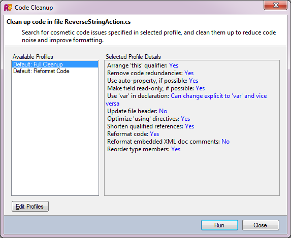

代码清理
如果要在代码中的特定位置修复错误，则可以创建快速修复。但是，如果您需要在文件，整个项目甚至整个解决方案的所有位置修复相同的错误，该怎么办？这就是代码清除的概念。
需要注意代码清理的第一件事是，它不使用highlightings和快速修复。为什么不？不使用突出显示，因为可能存在仅代码清除适用的问题。至于Quick-Fixes本身，需要记住的是，每个突出显示可能有多个快速修复程序，因此并不确定使用了正确的修复程序。
配置文件和描述符
看一下以下屏幕截图：

如您所见，代码清理包含多个配置文件 。配置文件只是一组设置：例如，在一个配置文件中，“ 安排”此“限定符”选项可能设置为“ 是” ，在另一个配置文件中则设置为“ 否” 。在上面的屏幕截图中看到的两个配置文件- 完全清除和重新格式化代码 -是默认配置文件。它们不能被删除，并且在内部，R＃API具有每个枚举的枚举。当然，用户也可以在“ 编辑配置文件”对话框中创建自己的配置文件 。
配置文件详细信息下列出的每个设置都使用描述符提供。描述符是一个类：
- 从以下之一继承
CodeCleanupOptionDescriptor类。例如，要创建布尔设置，您可以从CodeCleanupBoolOptionDescriptor。 - 装饰有
DefaultValue属性，指定其默认值。但是请注意，当涉及内置代码清除配置文件时，将有效覆盖这些默认值。 - 装饰有
DisplayName属性，其中包含显示在用户界面中的字符串。 - 装饰有
Category属性，指示选项的适用性。可以将一组现成的类别作为静态成员CodeCleanupOptionsDescrpitor类。
这是一个典型的选项描述符：
[DefaultValue(false)] [DisplayName("Replace Math.Pow() integer calls")] [Category(CSharpCategory)] private class Descriptor : CodeCleanupBoolOptionDescriptor { public Descriptor() : base("ReplaceMathPowIntegerCalls") { } }选项描述符通常存储在使用它们的代码清除模块中并从中返回。
代码清除模块
代码清除模块是提供代码清除功能的组件。要算作代码清理模块，一个类要做的就是实现ICodeCleanupModule介面并饰以CodeCleanupModule属性。
该模块可以使用我们刚刚看到的描述符进行自定义，并且具有Descriptors成员产生所有可用的描述符。例如：
private static readonly Descriptor descriptor = new Descriptor(); public ICollection<CodeCleanupOptionDescriptor> Descriptors { get { return new[] {descriptor}; } }为了弄清楚该模块是否适用，我们必须实施IsAvailable()方法：
public bool IsAvailable(IPsiSourceFile sourceFile) { return sourceFile.GetPsiFile<CSharpLanguage>() != null; }上面仅检查文件是否为C＃文件。
同样，如前所述，我们必须为两个内置代码清除模板的模块描述符提供默认值。这是在SetDefaultSetting()方法：
public void SetDefaultSetting(CodeCleanupProfile profile, CodeCleanup.DefaultProfileType profileType) { switch (profileType) { case CodeCleanup.DefaultProfileType.FULL: profile.SetSetting(descriptor, true); break; default: profile.SetSetting(descriptor, false); break; } }最后，大部分修改都发生在Process()方法。这是“清理”（即修改）代码的方法。与某些实用程序基类不同（例如， BulbItemImpl ），已实现的接口不提供事务处理行为的管道，这意味着要对文档进行修改，您需要编写类似于以下内容的代码：
file.GetPsiServices().PsiManager.DoTransaction(() => { using (shellLocks.UsingWriteLock()) { // your changes here } }, "Code cleanup");有关完整的代码清除示例，请参见SamplePlugin在的项目Samples SDK的文件夹。